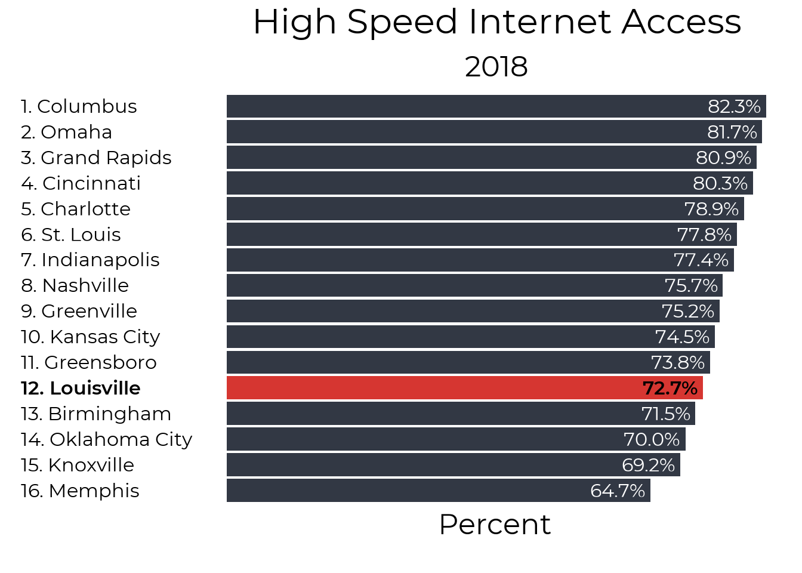
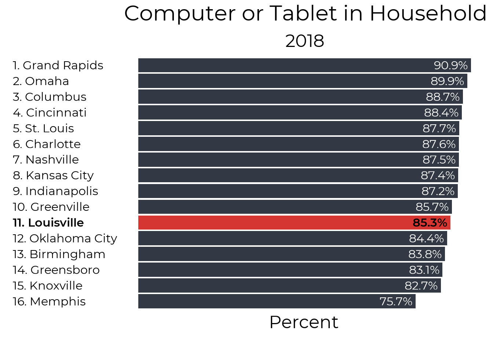

Chapter 2 Overall
This report uses census Microdata from IPUMS to look at internet access in the Louisville MSA. Data is available from 2013 to 2018. About 1 in 10 households in Louisville have no internet access, and 3 in 10 do not have the high speed access necessary for working and learning at home. Access to high speed internet access has not improved in the past 6 years. Households also lack access to devices, with 15% of houses not having a computer or a tablet. Houses that do have computers or tablets are also unlikely to have enough devices for multiple people working from home (unfortunately the Census data only asks about having 1 or more device).
2.1 High Speed Internet
Our focus on internet access is a focus on high speed access. While internet access over a smartphone or other non high speed source can be useful for staying connected, in the COVID era of working and learning from home high speed internet is a necessary utility that over a quarter of our households do not have. While 91% of houses have some form of internet access, only 73% have high speed internet access.

2.2 Devices
A full 15% of our households do not have either a computer or tablet at home, and this understates the extent of the internet device shortage, as a single device is insufficient for a household with multiple people working and learning.

2.3 Internet and Devices
Finally, we can also look at the overlap of having both high speed internet and a device to work on. At 71% this is fairly similar to the numbers with high speed internet, suggesting that most people with high speed internet do have at least one device capable of accessing it.